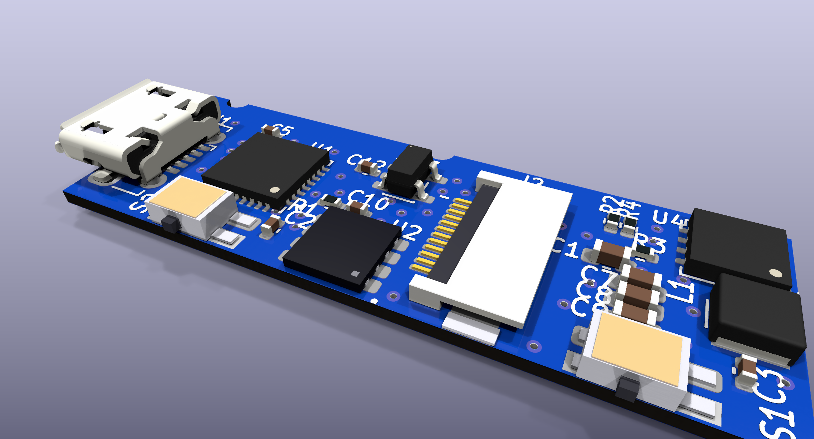

A KiCad reconstruction of the Ledger Nano S main board from photos, with the copper traced by hand, that you can explore in 3D.

Every part with its marking, the copper on both sides and the board photos. Hover a part for what it is and the net on each pin, or a pad, track or via to light up its whole net on both sides.
Open the 3D viewer| Part | What it is |
|---|---|
| U1 STM32F042K6 | Main (non-secure) MCU, Cortex-M0 with crystal-less USB (UFQFPN32). It owns USB, the display and the buttons, and proxies them for the secure element. |
| U2 ST31 secure element | DFN8, 4.0 × 4.2 mm, marked NBO / PHL744 / 7B. Talks ISO 7816-3 T=0 to the
MCU's USART1 in smartcard mode: I/O on PA9, CLK on PA8, RST on PA10. Its ATR, 3B 90 98 10 00, was
read with the chip off the board. |
| U3 LDO (AD30) | 3.0 V regulator from USB VBUS for the MCU, the secure element and the OLED logic. |
| U4 ST8R00 + L1 | Step-up converter from VBUS making the 6–12 V OLED panel supply. |
| J1, J2, S1, S2 | Micro-USB receptacle, the 12-pin FPC connector of the 128 × 32 OLED (SPI from the MCU), and the two side buttons. |
| Back test pads | A 5-pad SWD header (+3V0, SWCLK, GND, SWDIO, NRST) and nine bed-of-nails pads on the OLED nets. |
This is a reconstruction from photos, not the manufacturer's design. Positions are accurate to about 0.2 mm, footprints and 3D models are approximate, and pin names ending in “?” are inferences that still need a meter. The notes, evidence and confidence of every net are in the repository.
Ledger and Nano S are trademarks of Ledger SAS; this project is not affiliated with or endorsed by Ledger.